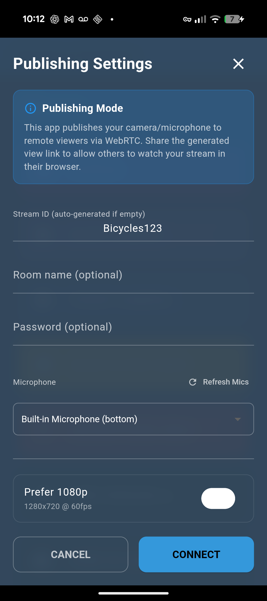
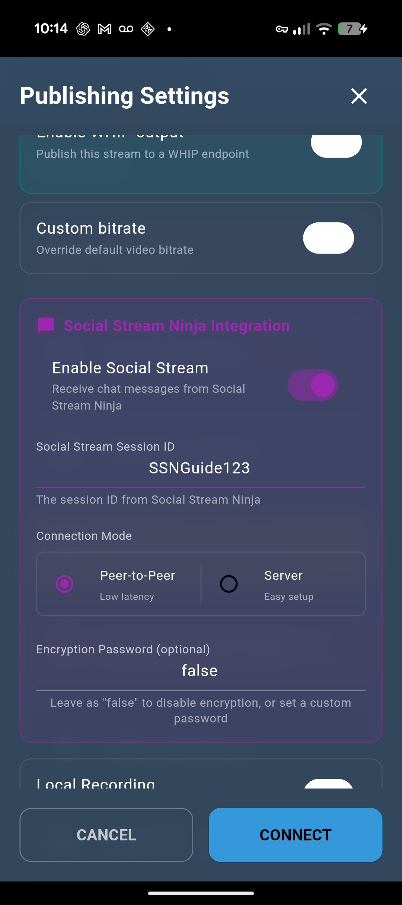
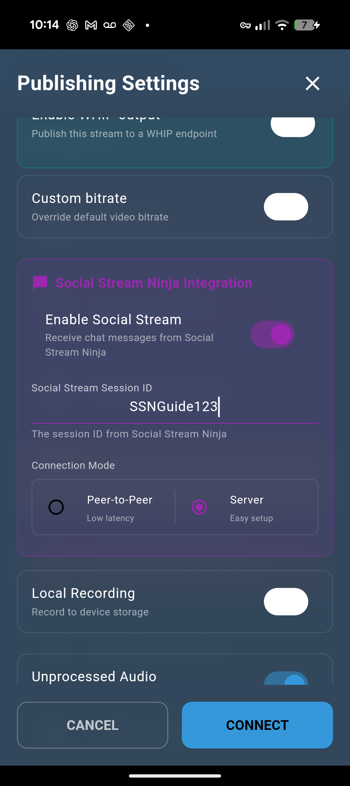

ما الذي يفعله هذا الإعداد
يعمل Social Stream Ninja على كمبيوتر، ويلتقط الدردشة من Twitch أو YouTube أو Kick أو مصدر آخر، ثم يمرّر رسائل الدردشة إلى تطبيق VDO.Ninja الأصلي على هاتفك.
الهاتف هو المستقبِل. ولا يتصل مباشرة بـ Twitch أو منصة الدردشة لديك.

1. بدء مصدر Social Stream
- افتح Social Stream Ninja على الكمبيوتر الذي سيجمع الدردشة.
- اضبط معرّف جلستك في Social Stream Ninja.
- افتح مصدر المنصة الذي تحتاجه، مثل Twitch أو YouTube أو Kick أو TikTok.
- تأكد من ظهور الرسائل في نافذة مصدر Social Stream أو لوحة الإرساء قبل فحص الهاتف.
يمكن استخدام وضع مصدر Twitch WebSocket. يتحكم وضع المصدر هذا فقط في كيفية التقاط SSN لدردشة Twitch؛ وهو منفصل عن وضع Peer-to-Peer أو Server في الهاتف.
2. فتح إعدادات النشر على الهاتف
- افتح تطبيق VDO.Ninja الأصلي.
- اختر وضع الكاميرا أو الشاشة أو الميكروفون الذي تريد استخدامه.
- في شاشة إعدادات النشر (Publishing Settings)، مرّر للأسفل إلى تكامل Social Stream Ninja (Social Stream Ninja Integration).

3. استخدام معرّف الجلسة نفسه
فعّل Social Stream والصق معرّف الجلسة نفسه تمامًا الذي يستخدمه SSN على الكمبيوتر.

false إلا إذا ضبطت كلمة مرور مطابقة لجلسة SSN.4. اختيار وضع اتصال واحد
| وضع الهاتف | إعداد SSN | متى يُستخدم |
|---|---|---|
| نظير إلى نظير (Peer-to-Peer) | استخدم إخراج P2P العادي في SSN. لا توجّه الدردشة عبر خادم API وحده. | أفضل خيار للبدء. يعمل عبر اتصالات الإنترنت المعتادة دون خادم محلي. |
| الخادم | تفعيل إرسال رسائل الدردشة إلى خادم API في SSN ضمن Global > Mechanics. | استخدمه عندما يكون P2P محظورًا أو غير موثوق. |

لا تخلط بين الأوضاع. إذا كان الهاتف في وضع Peer-to-Peer بينما يرسل SSN عبر وضع Server فقط، فلن يتلقى الهاتف الدردشة. وإذا كان الهاتف في وضع Server بينما لا يرسل SSN الدردشة إلى خادم API، فلن يتلقى الهاتف الدردشة.
5. الاتصال والاختبار
- اضغط على اتصال (Connect) في تطبيق VDO.Ninja الأصلي.
- أرسل رسالة دردشة حقيقية، أو استخدم رسالة اختبار SSN.
- راقب الهاتف. إذا عرض الهاتف Social Stream غير متصل (Social Stream not connected)، فقد يظل مصدر الدردشة يعمل، لكن مسار النقل من SSN إلى الهاتف غير متصل.
حالات الإخفاق الشائعة
| العَرَض | السبب الفعلي | الحل |
|---|---|---|
| تظهر الدردشة في SSN، لكن الهاتف يعرض Social Stream not connected. | مصدر المنصة يعمل، لكن مسار الإخراج من SSN إلى الهاتف غير متصل. | تحقق من معرّف الجلسة ووضع الاتصال وإعداد إخراج SSN. |
| يعمل على جهاز كمبيوتر ولا يعمل على آخر باستخدام معرّف الجلسة نفسه. | في وضع Peer-to-Peer، ينشر SSN باستخدام معرّف الجلسة بوصفه معرّف بث VDO.Ninja. لا يمكن إلا لنسخة SSN واحدة النشر باستخدام المعرّف نفسه في الوقت ذاته. | أغلق Social Stream أو عطّله على الجهاز الأول، ثم أعِد تشغيل SSN على الجهاز الثاني؛ أو استخدم معرّف جلسة مختلفًا. |
| وضع Server لا يتلقى الدردشة إطلاقًا. | يستمع الهاتف إلى قناة خادم API في SSN، لكن SSN لا ينشر الدردشة هناك. | تفعيل إرسال رسائل الدردشة إلى خادم API في SSN ضمن Global > Mechanics. |
| تعرض نافذة المصدر الدردشة، لكن لا يُمرَّر شيء. | قد يكون المصدر في وضع الرد فقط أو عدم الالتقاط. | تعطيل (Disable) بوت للرد فقط (دون التقاط) لذلك المصدر. |
| لا يمكن لهاتف بعيد استخدام وضع الخادم المحلي. | يقتصر وضع الخادم المحلي على الكمبيوتر أو الشبكة المحلية، وعادةً لا يمكن الوصول إليه عبر جدار حماية. | استخدم Peer-to-Peer، أو استخدم وضع Server العام مع تفعيل إخراج الدردشة إلى خادم API في SSN. |
رموز BTTV و7TV وFFZ التعبيرية
فعّل خيارات الرموز التعبيرية BTTV أو 7TV أو FFZ في SSN قبل تمرير الدردشة. يُثري SSN الرسالة قبل وصولها إلى الهاتف.
قد يظل عرض الدردشة في التطبيق الأصلي يُظهر نصًا بديلًا لرموز الصور التعبيرية إذا كان إصدار التطبيق لا يعرض صور الدردشة المضمّنة.